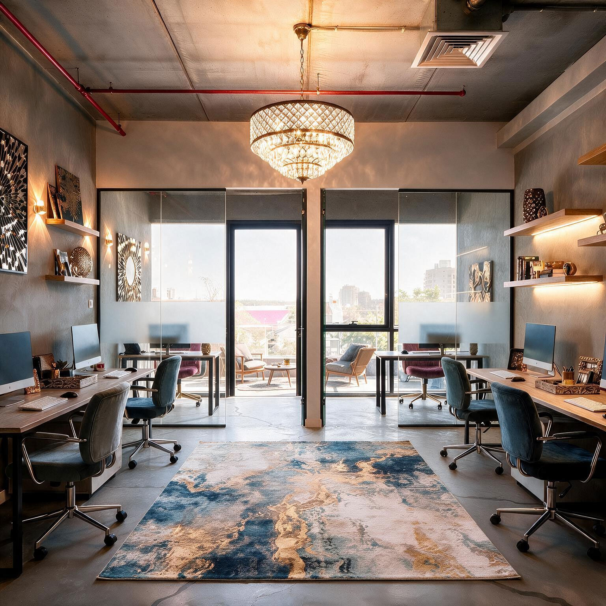

דירה במגדלי אייזנברג, רחובות
בית עירוני שמשלב מגורים, עבודה ויצירה בחלל אחד מדויק ונעים.
אדריכלות ועיצוב פנים עם תכנון מדויק וליווי אישי, מהרעיון ועד הבית השלם.
אני רוצה להבין איך אתם חיים, מה חשוב לכם ומה הייתם רוצים להרגיש בבית. משם נבנה התכנון, החלוקה, התאורה, הנגרות, החומרים והפרטים הקטנים. אני מלווה את התהליך גם בשטח, מול בעלי המקצוע ובבחירות.

התכנון כלל את החלל המרכזי, המטבח, הסוויטה, חדרי הרחצה, פיתוח השטח, הכניסה, החצר והתאורה החיצונית. שפה אחת שמתחילה כבר בדרך אל הבית.


“שיפוץ יכול להיות מאוד מתיש, אבל איתך זה היה מסע של כיף. מעולם לא הרגשתי לבד. היית הרבה יותר ממעצבת... תמיד היית נוכחת בבית יחד עם אנשי המקצוע ועמדת על דיוק בביצוע.”חנה
“הבית כולו הוא פיסות של אומנות. כל מי שנכנס משתאה ואומר שהוא יחיד במינו.”
אני נמצאת איתכם בבחירות, בהתלבטויות, בחנויות, בשטח ובקבלת ההחלטות, ושומרת גם על התמונה הגדולה וגם על הפרטים.


בית אלגנטי וחם שנבנה מתוך השראה, חומריות עשירה ותכנון שמחבר בין סלון, מטבח, פינת אוכל ואירוח.


בית עירוני שמשלב מגורים, עבודה ויצירה בחלל אחד מדויק ונעים.

אדריכלות, תכנון הבית ופיתוח הסביבה מתוך הסתכלות כוללת על המגרש והחיים בו.
חדר עבודה בבית צריך להרגיש חלק מהבית, אבל לעבוד כמו משרד אמיתי. אני מתכננת חדרי עבודה ופינות עבודה עם חשיבה על נוחות, תאורה, אחסון, אקוסטיקה, רקע לפגישות והשתלבות מלאה בשפה העיצובית של הבית.
לעיצוב חדרי עבודה בבית
עבורי אמנות היא לא תוספת שמגיעה בסוף. בחלק מהפרויקטים אני יוצרת עבודות אמנות ייחודיות במיוחד לבית, מתוך החומרים, הגוונים, הפרופורציות והסיפור של החלל. כך היצירה הופכת לחלק מהתכנון ולא לפריט שנבחר במקרה.
ליצירות ולעבודות האמנות
אני מתכננת ומעצבת גם משרדים, עסקים וחללים מסחריים. התכנון מחבר בין אופי המותג, האנשים שעובדים במקום, תנועה נכונה בחלל, תאורה, חומריות וחוויית הלקוח, כדי ליצור מקום שנראה מדויק וגם עובד נכון ביום יום.
בחירת חומרים, פיתוח חוץ, תאורה וליווי בזמן אמת. כך הבית מקבל צורה גם מעבר לתכניות.
השראה, בחירות ותהליך שמתחברים לבית אחד שלם.